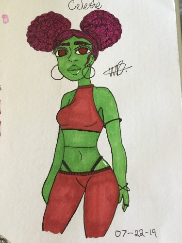
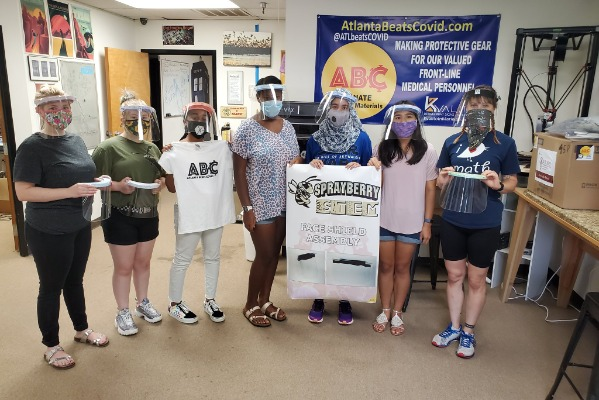

Our schools's gwc club got access to this coding website called Mad Learn and we spent about a year and a half making and perfecting this app. It was a fun experience because all of us had different knowledge of coding so if one person could solve a problem another person could.

This is a old drawing of mine I made in mid 2019, I was doing the three marker challenge and ended up with this funky alien.

Our school's STEM program partnered with 'The Maker Station' to make PPE during covid for a majority of hospitals and other buisnesses. It was a truly fun experience.